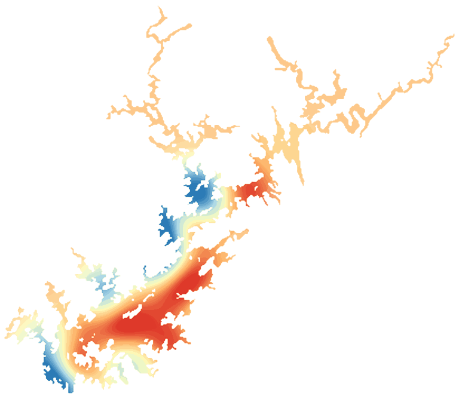

LakeScope › GA
Lake Lanier today
Updated 2026-11-14 - Atlas Labs
Clear water, 63°F water, level falling, 5 ft below normal, calm this morning.
Water level
1062.26 ft
USGS gauge 02334400 - 2026-11-14
7-day trend: falling (-0.38 ft). Compared with normal for this date: -4.5 ft (same weeks, 2016-2025).
Water clarity and algae
Clear water Last clear view: about a week ago. 1 cloudy pass since.
Surface temperature
63°F
seen from space on 2026-11-11

Weather, next 3 days
| Day | Sky | High / low | Wind | Rain |
|---|---|---|---|---|
| Saturday | Sunny | 52 / 35°F | 10 mph NW | 0% |
| Sunday | Areas Of Frost then Mostly Sunny | 55 / 39°F | - mph | 0% |
| Monday | Sunny | 55 / 40°F | 5 mph E | 0% |
Sunrise 07:08 - sunset 17:31 - Waxing crescent. National Weather Service.
Get the LakeScope app: alerts and the 3-D view of Lake Lanier